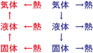

台風の世界観です。気象学を対象とします。気象も参照のこと。気象に詳しい父親の話を参考にしています。
氷を温めると水になり、水を温めると水蒸気になる、と言う物質の三態は有名だ。
もちろん、固体が温められると熱が加わって液体になり、さらに温められると気体になる。
だから、「気体の方が熱いのだ」と思う方も多いと思う。
だが、本当は、逆に液体が気体になる時に、周りから熱を奪う、「気化熱」と言う現象がある。
エネルギーを吸収して水が水蒸気になった時、この「変換」によって周りから熱を奪う。そして、水蒸気が雨粒になった時、この「変換」によって周りにストンと熱が出る。
熱を周りから充電し、放電する時に熱が出る、電池のようなものだと考えても良いだろう。
冷ますと気体から液体、固体になって、熱エネルギーが放出される。
温めると固体から液体、気体になって、熱エネルギーを奪う。
熱力学も参照のこと。

南の暖かい海上で、液体である海が太陽エネルギーを吸収して熱くなると、周りから熱を吸収して水蒸気が出る。
そして、その水蒸気は軽いため、どんどん上に上がっていく。これを「上昇気流」と言う。
上には、海上から離れているために冷たい空気がある。これによって、水蒸気は小さな水の粒になり、雲が出来る。だが、この時、気化熱と同じ原理によって、周りには大きな熱が生まれるのだ。
この熱によって、どんどん上昇気流は発展し、そして海上から「吸い上げるかのように」気流が生まれる。
この気流が、地球の自転の影響から、巨大な渦となって、偏西風によって日本にやってくる。
だから、台風は海水温が高いほど発生しやすく、発達しやすくなる。
温暖化する最近の地球でスーパー台風が発達しやすいのは、温暖化で海水温も上がっているためである。
最近急速に人類のリスクとなっているのは、ゲリラ豪雨と河川の氾濫や土石流です。
たとえば梅雨や台風などで、いきなり局所的にその地域だけが豪雨になることがあります。これがゲリラ豪雨です。
最近、温暖化を中心に地球の大気はおかしくなってきていて、そのようなゲリラ豪雨が頻発し、それが河川の氾濫や土石流を生み出し、家屋を流したり倒壊したり、ということが増えてきています。
消防や自衛隊なども、以前よりも役割が大きくなってきています。
国連などでは「地球温暖化」ならぬ「地球沸騰化」などの言葉も叫ばれており、異常気象は留まることなくさらに異常になっていくように思います。
地震などで津波が起きた時も同様の注意が必要です。いざという時のために、防災グッズを用意し、避難すべき場所と経路を日頃から確認しておきましょう。
2024.12.21